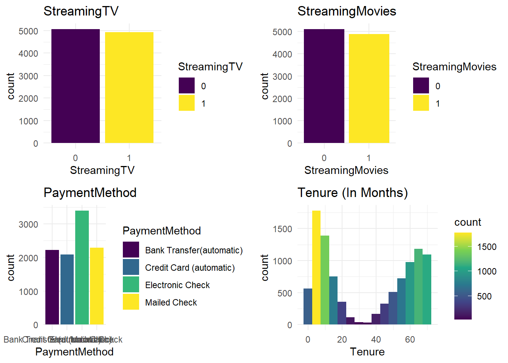

Population Area Children Age
Min. : 0 Rural :3327 Min. : 0.000 Min. :18.00
1st Qu.: 738 Suburban:3346 1st Qu.: 0.000 1st Qu.:35.00
Median : 2910 Urban :3327 Median : 1.000 Median :53.00
Mean : 9757 Mean : 2.088 Mean :53.08
3rd Qu.: 13168 3rd Qu.: 3.000 3rd Qu.:71.00
Max. :111850 Max. :10.000 Max. :89.00
Income Marital Gender Churn
Min. : 348.7 Divorced :2092 Female :5025 0:7350
1st Qu.: 19224.7 Married :1911 Male :4744 1:2650
Median : 33170.6 Never Married:1956 Nonbinary: 231
Mean : 39806.9 Separated :2014
3rd Qu.: 53246.2 Widowed :2027
Max. :258900.7
Outage_sec_perweek Email Contacts Yearly_equip_failure
Min. : 0.09975 Min. : 1.00 Min. :0.0000 Min. :0.000
1st Qu.: 8.01821 1st Qu.:10.00 1st Qu.:0.0000 1st Qu.:0.000
Median :10.01856 Median :12.00 Median :1.0000 Median :0.000
Mean :10.00185 Mean :12.02 Mean :0.9942 Mean :0.398
3rd Qu.:11.96949 3rd Qu.:14.00 3rd Qu.:2.0000 3rd Qu.:1.000
Max. :21.20723 Max. :23.00 Max. :7.0000 Max. :6.000
Techie Contract Port_modem Tablet InternetService Phone
0:8321 Month-to-month:5456 0:5166 0:7009 DSL :3463 0: 933
1:1679 One year :2102 1:4834 1:2991 Fiber Optic:4408 1:9067
Two Year :2442 None :2129
Multiple OnlineSecurity OnlineBackup DeviceProtection TechSupport StreamingTV
0:5392 0:6424 0:5494 0:5614 0:6250 0:5071
1:4608 1:3576 1:4506 1:4386 1:3750 1:4929
StreamingMovies PaperlessBilling PaymentMethod
0:5110 0:4118 Bank Transfer(automatic):2229
1:4890 1:5882 Credit Card (automatic) :2083
Electronic Check :3398
Mailed Check :2290
Tenure MonthlyCharge Bandwidth_GB_Year Timely_response
Min. : 1.000 Min. : 79.98 Min. : 155.5 Min. :1.000
1st Qu.: 7.918 1st Qu.:139.98 1st Qu.:1236.5 1st Qu.:3.000
Median :35.431 Median :167.48 Median :3279.5 Median :3.000
Mean :34.526 Mean :172.62 Mean :3392.3 Mean :3.491
3rd Qu.:61.480 3rd Qu.:200.73 3rd Qu.:5586.1 3rd Qu.:4.000
Max. :71.999 Max. :290.16 Max. :7159.0 Max. :7.000
Timely_fixes Timely_replacements Reliability Options
Min. :1.000 Min. :1.000 Min. :1.000 Min. :1.000
1st Qu.:3.000 1st Qu.:3.000 1st Qu.:3.000 1st Qu.:3.000
Median :4.000 Median :3.000 Median :3.000 Median :3.000
Mean :3.505 Mean :3.487 Mean :3.498 Mean :3.493
3rd Qu.:4.000 3rd Qu.:4.000 3rd Qu.:4.000 3rd Qu.:4.000
Max. :7.000 Max. :8.000 Max. :7.000 Max. :7.000
Respectful Courteous Active_listening
Min. :1.000 Min. :1.00 Min. :1.000
1st Qu.:3.000 1st Qu.:3.00 1st Qu.:3.000
Median :3.000 Median :4.00 Median :3.000
Mean :3.497 Mean :3.51 Mean :3.496
3rd Qu.:4.000 3rd Qu.:4.00 3rd Qu.:4.000
Max. :8.000 Max. :7.00 Max. :8.000 D208 Task 2
Student ID: 012170282
Part I: Research Question
A1. Which factors are most strongly associated with customer churn, and how do they influence the likelihood of churn?
A2. This analysis aims to create a multiple logistic regression model to accurately predict customer churn. Company executives can use this model’s data to accurately address customer churn.
Part II: Method Justification
B1. According to Zach Bobbitt from statology.org, there are 6 logistic regression assumptions. (Z. Bobbit 2020)
The Response variable needs to be binary. I will be using a binary factor type in this analysis.
The observations need to be independent because they do not represent the same individual. For example, time series data about the height of an individual would violate this assumption because the observations are all repeated measurements unique to an individual.
multi-colinearity needs to be minimized among variables. Multicolinearity occurs when there is a high correlation between variables. Multi-colinearity is a problem because the highly correlated variables essentially tell the same story and do not add any unique information.
Outliers have been appropriately managed.
The relationship between the explanatory variables and the logit of the response variable is linear.
Lastly, linear regression assumes that the sample size is large enough to ensure reliable and meaningful conclusions from the fitted model.
B2. I will use R within R-Studio to perform this analysis. While Python can perform this same statistical analysis, it was not explicitly designed for this purpose. R, on the other hand, was specifically designed for statistical analysis (Ihaka, n.d., p. 12). Due to this, R is the more logical choice for performing statistical tasks. Secondly, I have more experience using R than I do with Python. I’ve used R to complete previous courses, and I feel that it is more intuitive than Python.
B3. Logistic regression is the appropriate technique for this analysis because the dependent variable is binary (Yes = 1, No = 0). Additionally, the predictor variables include a mix of categorical and continuous types, making logistic regression a good choice. Lastly, logistic regression ranks customers based on their odds of churning, enabling the company to identify and address at-risk customers promptly.
Part III: Data Preparation
C1. In order for a logistic regression model to function properly and to accurately answer the research question, I need to ensure that my cleaning and preparation goals are met. First, I need to make sure that the variables I focus on are meaningful and relevant to the research question. Secondly, I have to ensure that categorical data are encoded as factors so that R can appropriately create dummy variables using its built-in one-hot encoding feature. Similarly, I need to confirm that quantitative data are correctly formatted as numeric or integer types to avoid processing errors and ensure accurate results.
Too achieve these goals I need to remove irrelevant columns such as customer_id, CaseOrder, and some other columns with irrelevant data to my question. Secondly, I have to update the data types that I will explain more in section C4.
C2. The dependent variable I’m explaining is ‘Churn.’ After removing several columns of data that had too many unique entries or contained irrelevant information, such as customer_id, lat and lng, I was left with around 70 independent variables, including the automatically generated dummy variables. The numeric and integer types all include a min, 1st Qu, Median, Mean, 3rd Qu, and Max values, whereas the factors include just the count for each level. The summary statistics below show all the variables, including the dependent variable, that I will use in my linear model. I will explain how I ended up with these variables in the next few sections.
C3. After running step-wise model selection based on the Akaike Information Criterion (AIC) and Backward elimination, I was left with far fewer variables than the initial mode. At this point my reduced model included 38 variables (including dummy variables). I eliminated more after insepcting the values of VIF(), which I will explain later. The following charts are the distributions of the variables I included in the final “reduced_model.”
Univariate plots
The univariate plots for the reduced model contain the following variables and their dummy variables.
Churn
Techie
Contract
InternetService
Phone
Multiple
OnlineBackup
DeviceProtection
StreamingTV
StreamingMovies
PaymentMethod
Tenure



Bivariate plots
The bivariate plots for the reduced model contain the following variables and their dummy variables.
Techie vs. Churn (Bar chart)
Contract vs. Churn (Bar chart)
InternetService vs. Churn (Bar chart)
Phone vs. Churn (Bar chart)
Multiple vs. Churn (Bar chart)
OnlineBackup vs. Churn (Bar chart)
DeviceProtection vs. Churn (Bar chart)
StreamingTV vs. Churn (Bar chart)
StreamingMovies vs. Churn (Bar chart)
PaymentMethod vs. Churn (Bar chart)
Tenure vs. Churn (Histogram)


C4. R automatically generates dummy variables for each unique value in these factor variables. Because of this the categorical variables will be converted to factors. The remaining quantitative variables will be converted to integers or numeric, depending on the values.
To align with my research question, binary variables, such as Churn and Techie, were converted to a factor encoded as 0 for No and 1 for Yes.
C5. The prepared data set will be included in my submission files.
Part IV: Model Comparison and Analysis
D1. To set up my initial model i first started by separating in the data in to training and test sets with a 80/20 split. The initial model will attempt to explain Churn by all the remaining variables in the data set that were not removed in the data cleaning step.
I begin by creating a logistic regression model using glm() because I need to use the statistical family “binomial’ for logistic regression. I based the model on the training set of data, churn_train.
# initial model
initial_model <- glm(Churn ~. , data = churn_train, family = 'binomial')
summary(initial_model)
Call:
glm(formula = Churn ~ ., family = "binomial", data = churn_train)
Coefficients:
Estimate Std. Error z value Pr(>|z|)
(Intercept) -4.679e+00 1.692e+00 -2.765 0.005688 **
Population 1.235e-06 3.091e-06 0.399 0.689538
AreaSuburban -6.382e-02 1.075e-01 -0.594 0.552812
AreaUrban 1.853e-02 1.060e-01 0.175 0.861266
Children 4.804e-02 1.544e-01 0.311 0.755768
Age -5.092e-03 1.651e-02 -0.308 0.757742
Income 2.905e-07 1.528e-06 0.190 0.849207
MaritalMarried 2.557e-01 1.376e-01 1.859 0.063088 .
MaritalNever Married 3.246e-02 1.365e-01 0.238 0.812053
MaritalSeparated 2.209e-01 1.353e-01 1.633 0.102469
MaritalWidowed 2.470e-01 1.358e-01 1.819 0.068924 .
GenderMale 4.239e-01 3.234e-01 1.311 0.189878
GenderNonbinary -1.053e-01 3.139e-01 -0.335 0.737354
Outage_sec_perweek -1.495e-02 1.463e-02 -1.022 0.306796
Email -5.068e-03 1.435e-02 -0.353 0.724049
Contacts 5.677e-02 4.406e-02 1.289 0.197551
Yearly_equip_failure -2.608e-02 6.813e-02 -0.383 0.701808
Techie1 1.095e+00 1.159e-01 9.454 < 2e-16 ***
ContractOne year -3.457e+00 1.450e-01 -23.840 < 2e-16 ***
ContractTwo Year -3.526e+00 1.430e-01 -24.649 < 2e-16 ***
Port_modem1 1.077e-01 8.685e-02 1.240 0.214892
Tablet1 -4.058e-02 9.496e-02 -0.427 0.669163
InternetServiceFiber Optic -2.891e+00 2.360e+00 -1.225 0.220650
InternetServiceNone -1.615e+00 1.880e+00 -0.859 0.390287
Phone1 -2.445e-01 1.463e-01 -1.671 0.094681 .
Multiple1 3.023e-01 2.279e-01 1.326 0.184763
OnlineSecurity1 -1.307e-01 3.511e-01 -0.372 0.709649
OnlineBackup1 -8.756e-02 2.034e-01 -0.431 0.666789
DeviceProtection1 -4.409e-02 2.625e-01 -0.168 0.866602
TechSupport1 -2.101e-01 1.956e-01 -1.074 0.282976
StreamingTV1 1.345e+00 5.708e-01 2.356 0.018492 *
StreamingMovies1 1.429e+00 4.081e-01 3.501 0.000463 ***
PaperlessBilling1 1.608e-01 8.815e-02 1.824 0.068164 .
PaymentMethodCredit Card (automatic) 1.511e-01 1.310e-01 1.154 0.248465
PaymentMethodElectronic Check 5.682e-01 1.189e-01 4.777 1.78e-06 ***
PaymentMethodMailed Check 9.449e-02 1.302e-01 0.726 0.468120
Tenure 3.175e-03 4.083e-01 0.008 0.993795
MonthlyCharge 4.539e-02 1.563e-02 2.903 0.003693 **
Bandwidth_GB_Year -1.456e-03 4.983e-03 -0.292 0.770093
Timely_response -4.344e-02 6.090e-02 -0.713 0.475665
Timely_fixes -2.305e-02 5.839e-02 -0.395 0.693006
Timely_replacements 2.215e-02 5.274e-02 0.420 0.674478
Reliability -2.008e-02 4.711e-02 -0.426 0.669851
Options 2.194e-02 4.973e-02 0.441 0.659147
Respectful 1.916e-02 5.085e-02 0.377 0.706335
Courteous 2.179e-02 4.859e-02 0.448 0.653853
Active_listening 6.726e-04 4.525e-02 0.015 0.988141
---
Signif. codes: 0 '***' 0.001 '**' 0.01 '*' 0.05 '.' 0.1 ' ' 1
(Dispersion parameter for binomial family taken to be 1)
Null deviance: 9251.6 on 7999 degrees of freedom
Residual deviance: 3457.9 on 7953 degrees of freedom
AIC: 3551.9
Number of Fisher Scoring iterations: 7The summary of the initial model shows that there are several variables whose coefficients do not add any statistically significant information to the model. I’ll address these in the next step.
The null deviance is 9251.6 on 7999 degrees of freedom, meaning that my response variable, Churn, shows a lot of variability without predictors and could be explained by adding predictor variables. The residual deviance of 3457.9 on 7953 degrees of freedom indicates that the predictor variables do indeed provide an effective explanation of the variability in Churn.
The AIC for this model is 3551.9. I will reference this number again when comparing the reduced model.
D2. I’ve chosen to use backward stepwise selection (Larose & Larose, 2019), because I have a large amount of variables and backward elimination will remove each insignificant variable until only those values that have a meaningful contribution will remain.
D3. After backward elimination I was left with the following model. However, this model will be refined further in the coming steps.
Call:
glm(formula = Churn ~ Children + Age + Techie + Contract + InternetService +
Phone + Multiple + OnlineSecurity + OnlineBackup + DeviceProtection +
StreamingTV + StreamingMovies + PaperlessBilling + PaymentMethod +
Tenure + MonthlyCharge + Bandwidth_GB_Year, family = "binomial",
data = churn_train)
Coefficients:
Estimate Std. Error z value Pr(>|z|)
(Intercept) -6.546167 0.670910 -9.757 < 2e-16 ***
Children -0.146373 0.042548 -3.440 0.000581 ***
Age 0.015510 0.004485 3.458 0.000543 ***
Techie1 1.099979 0.115276 9.542 < 2e-16 ***
ContractOne year -3.445299 0.144164 -23.898 < 2e-16 ***
ContractTwo Year -3.507074 0.141909 -24.714 < 2e-16 ***
InternetServiceFiber Optic 0.095929 0.562920 0.170 0.864686
InternetServiceNone 0.761809 0.489279 1.557 0.119470
Phone1 -0.243791 0.145357 -1.677 0.093506 .
Multiple1 0.463706 0.161808 2.866 0.004160 **
OnlineSecurity1 -0.564547 0.125614 -4.494 6.98e-06 ***
OnlineBackup1 -0.249549 0.139805 -1.785 0.074265 .
DeviceProtection1 -0.337493 0.124476 -2.711 0.006702 **
StreamingTV1 0.710337 0.267354 2.657 0.007886 **
StreamingMovies1 1.097328 0.272227 4.031 5.56e-05 ***
PaperlessBilling1 0.149497 0.087666 1.705 0.088140 .
PaymentMethodCredit Card (automatic) 0.147691 0.130322 1.133 0.257100
PaymentMethodElectronic Check 0.564349 0.118028 4.781 1.74e-06 ***
PaymentMethodMailed Check 0.102746 0.129278 0.795 0.426747
Tenure -0.512633 0.099884 -5.132 2.86e-07 ***
MonthlyCharge 0.026319 0.004895 5.377 7.59e-08 ***
Bandwidth_GB_Year 0.004843 0.001214 3.988 6.65e-05 ***
---
Signif. codes: 0 '***' 0.001 '**' 0.01 '*' 0.05 '.' 0.1 ' ' 1
(Dispersion parameter for binomial family taken to be 1)
Null deviance: 9251.6 on 7999 degrees of freedom
Residual deviance: 3473.4 on 7978 degrees of freedom
AIC: 3517.4
Number of Fisher Scoring iterations: 7I checked for multicoliniarity using vif() by checking for values above 5. This model returned a few that were exceptionally high. Bandwidth_GB_Year was the highest with a vif value of 2656.593644. I manually removed this variable from the model and checked vif again to find that the other variables were less than 5 aside from MonthlyCharge whose value was 16.889045. Once these two variables were removed from the model all the vif values were under 5.
vif_values <- vif(reduced_model)
vif_values #Looking for VIF values above 10. GVIF Df GVIF^(1/(2*Df))
Children 4.408718 1 2.099695
Age 4.524717 1 2.127138
Techie 1.073101 1 1.035906
Contract 1.671715 2 1.137079
InternetService 80.958271 2 2.999614
Phone 1.009656 1 1.004816
Multiple 3.534505 1 1.880028
OnlineSecurity 1.966776 1 1.402418
OnlineBackup 2.627063 1 1.620822
DeviceProtection 2.074451 1 1.440295
StreamingTV 9.483245 1 3.079488
StreamingMovies 9.806014 1 3.131456
PaperlessBilling 1.007578 1 1.003782
PaymentMethod 1.035359 3 1.005808
Tenure 2289.554799 1 47.849293
MonthlyCharge 22.288658 1 4.721087
Bandwidth_GB_Year 2656.593644 1 51.542154reduced_model <- update(reduced_model, . ~ . - Bandwidth_GB_Year)
vif_values <- vif(reduced_model)
vif_values #Looking for VIF values above 10. GVIF Df GVIF^(1/(2*Df))
Children 1.009207 1 1.004593
Age 1.006213 1 1.003102
Techie 1.069303 1 1.034071
Contract 1.656643 2 1.134507
InternetService 3.013465 2 1.317548
Phone 1.009045 1 1.004512
Multiple 3.527292 1 1.878109
OnlineSecurity 1.024270 1 1.012062
OnlineBackup 2.169975 1 1.473084
DeviceProtection 1.353261 1 1.163297
StreamingTV 5.631886 1 2.373159
StreamingMovies 7.823375 1 2.797030
PaperlessBilling 1.007575 1 1.003781
PaymentMethod 1.035009 3 1.005751
Tenure 2.494162 1 1.579292
MonthlyCharge 16.889045 1 4.109628reduced_model <- update(reduced_model, . ~ . - MonthlyCharge)
vif_values <- vif(reduced_model)
vif_values #Looking for VIF values above 10. GVIF Df GVIF^(1/(2*Df))
Children 1.009071 1 1.004525
Age 1.005593 1 1.002792
Techie 1.073013 1 1.035863
Contract 1.644954 2 1.132501
InternetService 1.167953 2 1.039576
Phone 1.008497 1 1.004239
Multiple 1.183127 1 1.087717
OnlineSecurity 1.005442 1 1.002717
OnlineBackup 1.046923 1 1.023193
DeviceProtection 1.014657 1 1.007302
StreamingTV 1.566421 1 1.251567
StreamingMovies 1.767499 1 1.329473
PaperlessBilling 1.007544 1 1.003765
PaymentMethod 1.032289 3 1.005310
Tenure 2.226475 1 1.492138summary(reduced_model)
Call:
glm(formula = Churn ~ Children + Age + Techie + Contract + InternetService +
Phone + Multiple + OnlineSecurity + OnlineBackup + DeviceProtection +
StreamingTV + StreamingMovies + PaperlessBilling + PaymentMethod +
Tenure, family = "binomial", data = churn_train)
Coefficients:
Estimate Std. Error z value Pr(>|z|)
(Intercept) -1.488e+00 2.402e-01 -6.196 5.80e-10 ***
Children 5.434e-03 2.009e-02 0.270 0.7868
Age -4.828e-05 2.095e-03 -0.023 0.9816
Techie1 1.092e+00 1.142e-01 9.562 < 2e-16 ***
ContractOne year -3.338e+00 1.386e-01 -24.088 < 2e-16 ***
ContractTwo Year -3.383e+00 1.356e-01 -24.941 < 2e-16 ***
InternetServiceFiber Optic -1.393e+00 1.014e-01 -13.739 < 2e-16 ***
InternetServiceNone -1.571e+00 1.239e-01 -12.681 < 2e-16 ***
Phone1 -2.839e-01 1.436e-01 -1.977 0.0481 *
Multiple1 1.645e+00 9.266e-02 17.752 < 2e-16 ***
OnlineSecurity1 -1.180e-01 8.896e-02 -1.326 0.1848
OnlineBackup1 7.720e-01 8.735e-02 8.839 < 2e-16 ***
DeviceProtection1 3.880e-01 8.617e-02 4.503 6.69e-06 ***
StreamingTV1 2.951e+00 1.083e-01 27.244 < 2e-16 ***
StreamingMovies1 3.487e+00 1.151e-01 30.291 < 2e-16 ***
PaperlessBilling1 1.409e-01 8.675e-02 1.624 0.1044
PaymentMethodCredit Card (automatic) 1.278e-01 1.293e-01 0.989 0.3228
PaymentMethodElectronic Check 5.390e-01 1.169e-01 4.612 3.98e-06 ***
PaymentMethodMailed Check 7.236e-02 1.284e-01 0.563 0.5731
Tenure -1.093e-01 3.042e-03 -35.931 < 2e-16 ***
---
Signif. codes: 0 '***' 0.001 '**' 0.01 '*' 0.05 '.' 0.1 ' ' 1
(Dispersion parameter for binomial family taken to be 1)
Null deviance: 9251.6 on 7999 degrees of freedom
Residual deviance: 3562.2 on 7980 degrees of freedom
AIC: 3602.2
Number of Fisher Scoring iterations: 7Lastly I needed to remove the variables from the model that were not adding any value. Age, Children, OnlineSecurity, and PaperlessBilling all have coefficients that were not statistically significant. PaymentMethod had two dummy variables that had coefficients that were not statistically significant and one that was very highly significant at the 0.001 level. So PaymentMethod was retained in the reduced model due to the high significance of one of the dummy variables within the PaymentMethod variable. The following is the reduced model.
# Removed values that did not have a statistically significant coefficient
#
reduced_model <- update(reduced_model, . ~ . - Age)
summary(reduced_model)
Call:
glm(formula = Churn ~ Children + Techie + Contract + InternetService +
Phone + Multiple + OnlineSecurity + OnlineBackup + DeviceProtection +
StreamingTV + StreamingMovies + PaperlessBilling + PaymentMethod +
Tenure, family = "binomial", data = churn_train)
Coefficients:
Estimate Std. Error z value Pr(>|z|)
(Intercept) -1.490711 0.213060 -6.997 2.62e-12 ***
Children 0.005449 0.020085 0.271 0.786
Techie1 1.091800 0.114167 9.563 < 2e-16 ***
ContractOne year -3.337923 0.138446 -24.110 < 2e-16 ***
ContractTwo Year -3.382960 0.135609 -24.946 < 2e-16 ***
InternetServiceFiber Optic -1.392689 0.101352 -13.741 < 2e-16 ***
InternetServiceNone -1.570870 0.123877 -12.681 < 2e-16 ***
Phone1 -0.283994 0.143631 -1.977 0.048 *
Multiple1 1.644919 0.092659 17.752 < 2e-16 ***
OnlineSecurity1 -0.117936 0.088943 -1.326 0.185
OnlineBackup1 0.772035 0.087348 8.839 < 2e-16 ***
DeviceProtection1 0.388022 0.086167 4.503 6.70e-06 ***
StreamingTV1 2.950958 0.108317 27.244 < 2e-16 ***
StreamingMovies1 3.487461 0.115126 30.293 < 2e-16 ***
PaperlessBilling1 0.140863 0.086744 1.624 0.104
PaymentMethodCredit Card (automatic) 0.127856 0.129291 0.989 0.323
PaymentMethodElectronic Check 0.538991 0.116842 4.613 3.97e-06 ***
PaymentMethodMailed Check 0.072394 0.128411 0.564 0.573
Tenure -0.109290 0.003042 -35.931 < 2e-16 ***
---
Signif. codes: 0 '***' 0.001 '**' 0.01 '*' 0.05 '.' 0.1 ' ' 1
(Dispersion parameter for binomial family taken to be 1)
Null deviance: 9251.6 on 7999 degrees of freedom
Residual deviance: 3562.2 on 7981 degrees of freedom
AIC: 3600.2
Number of Fisher Scoring iterations: 7reduced_model <- update(reduced_model, . ~ . - Children)
summary(reduced_model)
Call:
glm(formula = Churn ~ Techie + Contract + InternetService + Phone +
Multiple + OnlineSecurity + OnlineBackup + DeviceProtection +
StreamingTV + StreamingMovies + PaperlessBilling + PaymentMethod +
Tenure, family = "binomial", data = churn_train)
Coefficients:
Estimate Std. Error z value Pr(>|z|)
(Intercept) -1.479621 0.209096 -7.076 1.48e-12 ***
Techie1 1.090837 0.114114 9.559 < 2e-16 ***
ContractOne year -3.337556 0.138446 -24.107 < 2e-16 ***
ContractTwo Year -3.380971 0.135360 -24.978 < 2e-16 ***
InternetServiceFiber Optic -1.392802 0.101353 -13.742 < 2e-16 ***
InternetServiceNone -1.570353 0.123861 -12.678 < 2e-16 ***
Phone1 -0.284005 0.143644 -1.977 0.048 *
Multiple1 1.644171 0.092611 17.754 < 2e-16 ***
OnlineSecurity1 -0.118050 0.088946 -1.327 0.184
OnlineBackup1 0.771875 0.087345 8.837 < 2e-16 ***
DeviceProtection1 0.388295 0.086159 4.507 6.58e-06 ***
StreamingTV1 2.951186 0.108315 27.246 < 2e-16 ***
StreamingMovies1 3.487764 0.115125 30.295 < 2e-16 ***
PaperlessBilling1 0.140644 0.086741 1.621 0.105
PaymentMethodCredit Card (automatic) 0.128496 0.129268 0.994 0.320
PaymentMethodElectronic Check 0.539443 0.116824 4.618 3.88e-06 ***
PaymentMethodMailed Check 0.072568 0.128410 0.565 0.572
Tenure -0.109296 0.003042 -35.933 < 2e-16 ***
---
Signif. codes: 0 '***' 0.001 '**' 0.01 '*' 0.05 '.' 0.1 ' ' 1
(Dispersion parameter for binomial family taken to be 1)
Null deviance: 9251.6 on 7999 degrees of freedom
Residual deviance: 3562.3 on 7982 degrees of freedom
AIC: 3598.3
Number of Fisher Scoring iterations: 7reduced_model <- update(reduced_model, . ~ . - OnlineSecurity)
summary(reduced_model)
Call:
glm(formula = Churn ~ Techie + Contract + InternetService + Phone +
Multiple + OnlineBackup + DeviceProtection + StreamingTV +
StreamingMovies + PaperlessBilling + PaymentMethod + Tenure,
family = "binomial", data = churn_train)
Coefficients:
Estimate Std. Error z value Pr(>|z|)
(Intercept) -1.513217 0.207483 -7.293 3.03e-13 ***
Techie1 1.095002 0.114089 9.598 < 2e-16 ***
ContractOne year -3.336452 0.138357 -24.115 < 2e-16 ***
ContractTwo Year -3.386070 0.135349 -25.017 < 2e-16 ***
InternetServiceFiber Optic -1.392909 0.101346 -13.744 < 2e-16 ***
InternetServiceNone -1.567927 0.123782 -12.667 < 2e-16 ***
Phone1 -0.287097 0.143595 -1.999 0.0456 *
Multiple1 1.643030 0.092557 17.752 < 2e-16 ***
OnlineBackup1 0.771401 0.087313 8.835 < 2e-16 ***
DeviceProtection1 0.387417 0.086138 4.498 6.87e-06 ***
StreamingTV1 2.948873 0.108232 27.246 < 2e-16 ***
StreamingMovies1 3.487643 0.115118 30.296 < 2e-16 ***
PaperlessBilling1 0.139620 0.086716 1.610 0.1074
PaymentMethodCredit Card (automatic) 0.125393 0.129187 0.971 0.3317
PaymentMethodElectronic Check 0.535433 0.116716 4.587 4.49e-06 ***
PaymentMethodMailed Check 0.066440 0.128347 0.518 0.6047
Tenure -0.109305 0.003041 -35.940 < 2e-16 ***
---
Signif. codes: 0 '***' 0.001 '**' 0.01 '*' 0.05 '.' 0.1 ' ' 1
(Dispersion parameter for binomial family taken to be 1)
Null deviance: 9251.6 on 7999 degrees of freedom
Residual deviance: 3564.0 on 7983 degrees of freedom
AIC: 3598
Number of Fisher Scoring iterations: 7reduced_model <- update(reduced_model, . ~ . - PaperlessBilling)
summary(reduced_model)
Call:
glm(formula = Churn ~ Techie + Contract + InternetService + Phone +
Multiple + OnlineBackup + DeviceProtection + StreamingTV +
StreamingMovies + PaymentMethod + Tenure, family = "binomial",
data = churn_train)
Coefficients:
Estimate Std. Error z value Pr(>|z|)
(Intercept) -1.437885 0.201869 -7.123 1.06e-12 ***
Techie1 1.096542 0.114025 9.617 < 2e-16 ***
ContractOne year -3.332606 0.138292 -24.098 < 2e-16 ***
ContractTwo Year -3.378544 0.135117 -25.005 < 2e-16 ***
InternetServiceFiber Optic -1.385958 0.101166 -13.700 < 2e-16 ***
InternetServiceNone -1.563533 0.123708 -12.639 < 2e-16 ***
Phone1 -0.284447 0.143618 -1.981 0.0476 *
Multiple1 1.643771 0.092539 17.763 < 2e-16 ***
OnlineBackup1 0.771504 0.087286 8.839 < 2e-16 ***
DeviceProtection1 0.392773 0.086052 4.564 5.01e-06 ***
StreamingTV1 2.942199 0.107998 27.243 < 2e-16 ***
StreamingMovies1 3.484371 0.114978 30.305 < 2e-16 ***
PaymentMethodCredit Card (automatic) 0.125430 0.129134 0.971 0.3314
PaymentMethodElectronic Check 0.532863 0.116672 4.567 4.94e-06 ***
PaymentMethodMailed Check 0.064269 0.128329 0.501 0.6165
Tenure -0.109204 0.003037 -35.953 < 2e-16 ***
---
Signif. codes: 0 '***' 0.001 '**' 0.01 '*' 0.05 '.' 0.1 ' ' 1
(Dispersion parameter for binomial family taken to be 1)
Null deviance: 9251.6 on 7999 degrees of freedom
Residual deviance: 3566.6 on 7984 degrees of freedom
AIC: 3598.6
Number of Fisher Scoring iterations: 7The coefficients in the reduced model include variables whose coefficients are statistically significant at the 0.001 level. Phone1 was kept because it showed a very minor significance, 0.1, but because of the vast number of variables that had no significance in the initial model I decided to keep Phone1.
Plots for the initial model
par(mfrow = c(2, 2)) # Arrange plots in a 2x2 grid
plot(initial_model)
Plots for the reduced model
par(mfrow = c(2, 2)) # Arrange plots in a 2x2 grid
plot(reduced_model)
E1. The AIC was used as one of the model evaluation metrics. The AIC for the initial model was 3551.914, while the AIC for the reduced model was 3598.617. The reduced model, having a higher AIC value, suggests that the model fits the data worse than the initial model. However, This is expected since the reduced model uses far fewer predictor variables.
AIC(initial_model) # AIC = 3551.914[1] 3551.914AIC(reduced_model) # AIC = 3598.617[1] 3598.617Another metric used is a chi square test on the initial model and the reduced model. The chi square test will determine if the reduced model (simpler model) fits the data significantly worse than the initial model (complex model).
anova(initial_model, reduced_model, "Chaisq")Analysis of Deviance Table
Model 1: Churn ~ Population + Area + Children + Age + Income + Marital +
Gender + Outage_sec_perweek + Email + Contacts + Yearly_equip_failure +
Techie + Contract + Port_modem + Tablet + InternetService +
Phone + Multiple + OnlineSecurity + OnlineBackup + DeviceProtection +
TechSupport + StreamingTV + StreamingMovies + PaperlessBilling +
PaymentMethod + Tenure + MonthlyCharge + Bandwidth_GB_Year +
Timely_response + Timely_fixes + Timely_replacements + Reliability +
Options + Respectful + Courteous + Active_listening
Model 2: Churn ~ Techie + Contract + InternetService + Phone + Multiple +
OnlineBackup + DeviceProtection + StreamingTV + StreamingMovies +
PaymentMethod + Tenure
Resid. Df Resid. Dev Df Deviance Pr(>Chi)
1 7953 3457.9
2 7984 3566.6 -31 -108.7 1.453e-10 ***
---
Signif. codes: 0 '***' 0.001 '**' 0.01 '*' 0.05 '.' 0.1 ' ' 1The Chi-square test indicates that the reduced model has more residual degrees of freedom because it includes fewer predictors. However, the reduced model has a higher residual deviance, meaning it fits the data worse than the initial model. This is expected since eliminating predictors generally reduces the model’s ability to explain the variance in the data. The difference in deviance between the models is -108.7, which confirms that the reduced model explains less variance than the initial model. Again, this is anticipated because fewer predictors are included.
The p-value for the Chi-square test is 1.453e-10, which is far smaller than the significance threshold of 0.05. This indicates that the difference in deviance between the two models is statistically significant, meaning the initial model fits the data significantly better than the reduced model.
In addition, the Akaike Information Criterion (AIC) for both models is similar with the reduced model being slightly higher. This indicates that the initial model maintains a better balance between model fit and complexity. The reduced model, however, has far fewer predictors making it a simpler but robust model. In the next section, I will provide a detailed analysis of the reduced model’s accuracy, but for now, it is worth noting that the reduced model predicts churn correctly 90.25% of the time.
Another model evaluation metric used in this analysis is the Receiver Operation Characteristic curve (ROC). The ROC curve shows the trade off between the ‘True Positive Rate’ and the ‘False Positive Rate’. A model with good performance will have a blue line that hugs the top left of the graph.

The ‘Area Under the Curve’ (AUC) measures the area under the ROC curve. A perfect model would have an AUC value of 1, indicating that the model can perfectly distinguish between positive and negative classes. A low AUC value suggests that the model struggles to differentiate between true positive and false positive rates, meaning it may not reliably predict which customers will churn, leading to poor discrimination and potentially higher rates of false positives.
auc <- performance(pred, "auc")@y.values[[1]]
auc # AUC = 0.9586676auc <- performance(pred, "auc")@y.values[[1]][1] 0.9585676To summarize the comparison, while the initial model fits the data better, it is also far more complex. The reduced model, on the other hand, achieves similar predictive power (>90% accuracy) with fewer predictors, demonstrating one of the benefits of simpler models: reduced data collection costs. Additionally, the AUC is very close to 1 (0.9586676) meaning that the model has an excellent ability to distinguish between churned customers and non-churned customers.
E2.
I used the predict() function to predict the probabilities of churn in both the training set and the test set. If the probability is above 0.5, the ifelse() function assigns a ‘1’, indicating that the predicted value is ‘Churned,’ and a ‘0’ for ‘Not Churned.’
I’ve included the confusion matrix for both the test set and the training set below. This confusion matrix evaluates the model’s predictions for churn and consists of true negatives, false negatives, false positives, and true positives. By adding up the accurate predictions (true negatives and true positives) and dividing by the total observations in the data set, I calculate the accuracy rate. Similarly, the misclassification rate is calculated as 1− 'Accuracy rate'.
For the test set (churn_test), the model accurately predicted churn 1805 times out of a total of 2000 observations (1389+416)/2000 = 0.9025, resulting in an accuracy rate of 90.25%. Therefore, the misclassification error, or the rate at which the model is incorrect, is 9.75%, 1−0.9025=0.0975.
#Training set --------------------------------------------------------
table(Predicted = pred1, Actual = churn_train$Churn) #confusion matrix Actual
Predicted 0 1
0 5528 418
1 352 1702train_accuracy <- (5528+1702)/8000
train_misclassification <- 1 - train_accuracy
train_accuracy*100 #model is 90.375% accurate[1] 90.375train_misclassification*100 #9.625% of the time the prediction is wrong[1] 9.625#Test set -------------------------------------------------------------
table(Predicted = pred2, Actual = churn_test$Churn) #confusion matrix Actual
Predicted 0 1
0 1389 114
1 81 416test_accuracy <- (1389+416)/2000
test_misclassification <- 1 - test_accuracy
test_accuracy*100 #model is 90.25% accurate[1] 90.25test_misclassification*100 #9.75% of the time the prediction is wrong[1] 9.75E3. The full error-free code will be included in my submission files. It will be titled CodeV2T2.R.
Part V: Data Summary and Implications
F1.
The reduced model formula:
Call:
glm(formula = Churn ~ Techie + Contract + InternetService + Phone +
Multiple + OnlineBackup + DeviceProtection + StreamingTV +
StreamingMovies + PaymentMethod + Tenure, family = "binomial",
data = churn_train)
Coefficients:
Estimate Std. Error z value Pr(>|z|)
(Intercept) -1.437885 0.201869 -7.123 1.06e-12 ***
Techie1 1.096542 0.114025 9.617 < 2e-16 ***
ContractOne year -3.332606 0.138292 -24.098 < 2e-16 ***
ContractTwo Year -3.378544 0.135117 -25.005 < 2e-16 ***
InternetServiceFiber Optic -1.385958 0.101166 -13.700 < 2e-16 ***
InternetServiceNone -1.563533 0.123708 -12.639 < 2e-16 ***
Phone1 -0.284447 0.143618 -1.981 0.0476 *
Multiple1 1.643771 0.092539 17.763 < 2e-16 ***
OnlineBackup1 0.771504 0.087286 8.839 < 2e-16 ***
DeviceProtection1 0.392773 0.086052 4.564 5.01e-06 ***
StreamingTV1 2.942199 0.107998 27.243 < 2e-16 ***
StreamingMovies1 3.484371 0.114978 30.305 < 2e-16 ***
PaymentMethodCredit Card (automatic) 0.125430 0.129134 0.971 0.3314
PaymentMethodElectronic Check 0.532863 0.116672 4.567 4.94e-06 ***
PaymentMethodMailed Check 0.064269 0.128329 0.501 0.6165
Tenure -0.109204 0.003037 -35.953 < 2e-16 ***
---
Signif. codes: 0 '***' 0.001 '**' 0.01 '*' 0.05 '.' 0.1 ' ' 1
(Dispersion parameter for binomial family taken to be 1)
Null deviance: 9251.6 on 7999 degrees of freedom
Residual deviance: 3566.6 on 7984 degrees of freedom
AIC: 3598.6
Number of Fisher Scoring iterations: 7Several variables show a strong and significant association with churn. The variable with the most notable positive association is StreamingMovies1 having an coefficient of 3.48437, which means that, holding all other variables constant, subscribing to StreamingMovies (increasing the predictor variable by 1) increases the log-odds of churn by 3.48437.
log-odds are not as easy to understand as odds ratios so I will convert the log-odds into odds ratios by exponentiating coefficients from the reduced model. (RStudio, n.d.)
(Intercept) Techie1
0.23742937 2.99379451
ContractOne year ContractTwo Year
0.03569994 0.03409707
InternetServiceFiber Optic InternetServiceNone
0.25008411 0.20939488
Phone1 Multiple1
0.75243019 5.17464649
OnlineBackup1 DeviceProtection1
2.16301715 1.48108169
StreamingTV1 StreamingMovies1
18.95749465 32.60192313
PaymentMethodCredit Card (automatic) PaymentMethodElectronic Check
1.13363635 1.70380247
PaymentMethodMailed Check Tenure
1.06637888 0.89654711 The odds of churn are 32.60 times higher for customers with StreamingMovies services. similarly, StreamingTV1 and Multiple1 have 18.96 and 5.17 respectively, times higher odds of churning. Likewise, when a customer identifies themselves as a Techie (Techie1), the odds of this customer churning are 2.99 times higher than ‘non-techie’ customers.
This model contains almost exclusively, variables whose statistical significance is 0.001. one variable has a 0.1 significance and two other dummy variables are not statistically significant but could not be removed because they are part of a variable that does include a very statistically significant coefficient and I decided to retain this variable.
This reduced model successfully predicts customer churn at a rate over 90%. Statistically, variables such as Techie, Contract, InternetService, Multiple, StreamingTV, StreamingMovies, and Tenure are highly significant, with p-values below 0.05. For instance, customers with StreamingMovies1 or StreamingTV1 are significantly more likely to churn, while longer contracts decreases the likelihood of churn. The model successfully reduces the number of variables making the model simpler. Practically, these findings can offer meaningful insights since the company can accurately predict if a specific customer is going to churn or not.
It is important to note that correlation does not equal causation. For example, just because customers with a two year contract has far lower odds of churn as compared to a customer on the month to month contract, that does not mean that the contract length is the cause of the churn odds. There may be other factors that are not provided in the data set that are the actual cause of the lower odds. That being said, we can still accurately predict that customers with longer contracts are less likely to churn.
F2. The company should focus on longer contracts, specifically one or two year contracts, InternetService None, and InternetServiceFiber Optic services. These variables have the greatest effect on increasing customer churn. While I can not say that any of these variables are the cause of the customer not churning, the customers who subscribe to these services have far lower odds of churning than customers who do not subscribe. It also appears that streaming services are having a detrimental effect on customer churn. The company should investigate this further by collecting survey data that captures customer satisfaction. StreamingTV and StreamingMovies are the two most detrimental services to the company and should be investigated further.
Part VI: Demonstration
G1. The Panopto presentation link will be included in my submission.
H - I Sources
Bobbitt, Z. (2020, October 13).The 6 Assumptions of Logistic Regression (With Examples). Statology. Retrieved December 29, 2024, from https://www.statology.org/assumptions-of-logistic-regression/)
Ihaka, R. (n.d.). The R Project: A brief history and thoughts about the future (p. 12). The University of Auckland. Retrieved November 17, 2024, from https://www.stat.auckland.ac.nz/~ihaka/downloads/Otago.pdf
Larose, C. D., & Larose, D. T. (2019). Data science using Python and R. Wiley. Retrieved from https://eds.p.ebscohost.com/eds/ebookviewer/ebook/bmxlYmtfXzIwOTEzNzFfX0FO0?sid=04ef9475-3bed 4dbe-8317-a1c5eb6da3cb@redis&vid=0&format=EB&lpid=lp_151&rid=0
RStudio. (n.d.). Logistic regression example. RStudio. Retrieved January 5, 2025, from https://rstudio-pubs-static.s3.amazonaws.com/182726_aef0a3092d4240f3830c2a7a9546916a.html